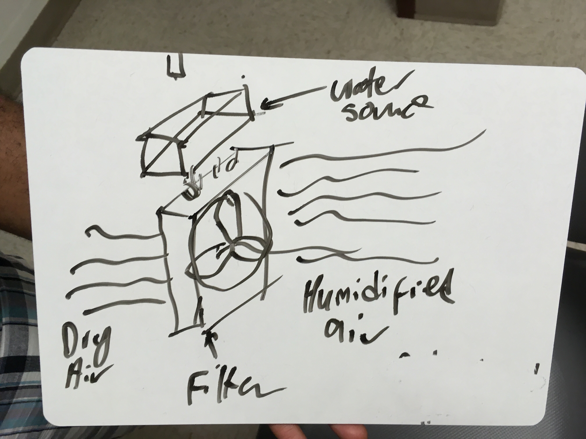

Like most communicable diseases, Tuberculosis can be contracted in many different ways. However the type of contraction our group focused on is airborne development. According to one of our interviewees, a prison is a very dirty place, where human rights are abused to the teeth. Lack of sanitation includes contaminated air, prison systems are extermely over-crowded and have no air conditioning, and as a result the air becomes very hot and dry. And that is the perfect environment for bacteria to infest. An extremly cheap, but powerful humidifier that can be built internaly into the prison, that will convert hot, dry air into cool air. This will not only lower the rate of Tuberculosis within prisons, but, it will also recyle the prison's water.
You are probably unaware, but Fulton county has some of the highest amounts of TB cases in the country. As of 2016 there were slightly over 300 cases of TB in Georgia alone, which Fulton county accounted for over three fourths of those numbers. Our group has been doing extensive research, and we were able to create a table over the past 20 years of TB in Georgia, and then form an equation to predict the number of cases in the future. y = -22.68x + 772, we created a graph for this data as well for viewers who can’t read algebra. But as you can see cases are declining, but not fast enough. The reason for this is Fulton’s significant prison industrial complex. Prisons are extreme hotspots for TB due to overcrowding and lack of sanitation, in particular the ventilation system. TB is an airborne bacteria, and with no central AC in the compound, it is a perfect environment for the bacteria. My solution, internal humidifiers, these devices will recycle the water and turn the hot dry air into cool clean air to prevent the contraction of TB, so when people go back into society they won’t bring TB back out with them and spread it. African American males are profusely incarcerated in this society, as a result they tend to have the highest rate of TB contraction than any other race. There is a possibility that this statistic can decline, but it starts with your decision to use our solution.